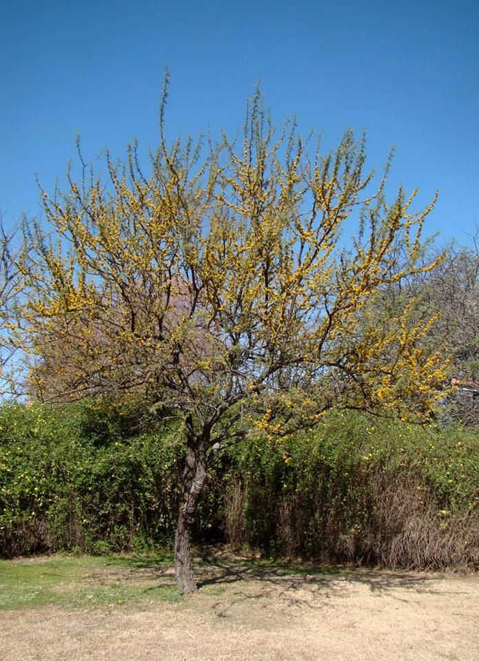

ESPINILLO (Vachellia caven)

- Familia: Leguminosas.
- Tronco: hasta 25cm de diámetro.
- Corteza: persistente, fisura longitudinalmente, color pardo oscuro o grisácea, espinas rectas geminadas, blanquecinas, de entre 5 y 25mm. de longitud, muy agudas, sin agujones.
- Copa: ancha con estípulas espinosas de 1-3 cm de longitud.
- Hoja: bipinadas con 3-15 pares de pinas y numerosos foliolos, pecíolo pubescente.
- Flor: flores hermafroditas, sésiles, color amarillo-anaranjado, fragantes, dispuestas en cabezuelas globosas, laterales.
- Fruto: legumbre cilíndrico-fusiforme, negra, coriácea, de 3-7 cm de longitud y 1,2-2,5 cm de anchura.
- Semilla: numerosas y biseriadas.
- Usos:
- La principal función es producir carbón de calidad y también postes de corrales y alambrados. La madera posee albura blanco amarillento y duramen castaño rojizo que se vuelve oscuro cuando es expuesto al aire, es dura y pesada.
- El cocimiento de los frutos suministra una tintura color gris oscuro que se puede utilizar como tinta agregándole SO4Fe (sulfato ferroso).
- Sus ramas, que tienen abundantes espinas agudas, son utilizadas para hacer y reparar cercos que eviten el paso del ganado.
- Reproducción: se reproduce fácilmente por semillas.
- Floración: florece a principios de primavera.
- Fructificacion: brinda frutos dos veces al año, en verano y otoño.
Flor
Fruto
Semillas